library(dplyr)
library(plyr)
library(EDASeq)
library(limma)
library(edgeR)
library(genefilter)
library(ggplot2)
library(ggrepel)
library(pheatmap)
library(cluster)Inference with edgeR and enrichment analysis
Introduction
After normalization we can proceed with the differential expression genes identification. Differentially expressed gene (DEG) identification is the process of finding genes whose expression levels differ significantly on average between biological conditions. The edgeR package will use to the identification.
We load the .RData object from the previous tutorial.
load("normalization.RData")# colnames <- colnames(tmm)
# colnames(tmm) <- substr(colnames(tmm), 9, 12)The biological question is to identify the transcriptional differences between the two LUAD subtypes: proximal-inflammatory (prox.-inflam) and proximal-proliferative (prox.-prolif). The subtype information is stored in the paper_expression_subtype variable.
table(luad_sel$paper_expression_subtype)
prox.-inflam prox.-prolif. TRU
83 60 94 # Remove the third category
luad_prox <- luad_sel[, luad_sel$paper_expression_subtype != "TRU"]
luad_prox$paper_expression_subtype <- as.character(luad_prox$paper_expression_subtype)Exploring the mean-variance relationship
First we explore the mean-variance relationship on our dataset.
In RNA-seq data the variance is typically larger than the mean, a phenomenon called overdispersion. The distribution for over-dispersed counts is the Negative Binomial distribution (NB), where \(Var(Y)=μ+ϕμ^2\) (quadratic relationship between the mean and the variance).
To estimate the dispersion we’ll use edgeR package.
design <- model.matrix(~ paper_expression_subtype, data = colData(luad_prox))
head(design) (Intercept) paper_expression_subtypeprox.-prolif.
TCGA-44-2665-01A-01R-0946-07 1 0
TCGA-97-7937-01A-11R-2170-07 1 0
TCGA-44-2665-01B-06R-A277-07 1 0
TCGA-64-5774-01A-01R-1628-07 1 1
TCGA-78-7155-01A-11R-2039-07 1 0
TCGA-49-4506-01A-01R-1206-07 1 1# Create a DGEList object
dge <- DGEList(assay(luad_prox, "raw_count"))Then, scaling factors are computed using the calcNormFactors() function to convert the observed library sizes into normalized values.
The effective library sizes used in downstream analyses are calculated as lib.size * norm.factors, where lib.size contains the original library sizes and norm.factors is the vector of scaling factors computed by this function. The effective library sizes are incorporated into the model that estimates dispersion. The function plotMeanVar() in edgeR is used to visualize the relationship between gene expression levels (mean) and variability (variance).
dge <- calcNormFactors(dge, method="TMM")
dge <- estimateDisp(dge, design)
plotMeanVar(dge, show.raw.vars = TRUE, show.ave.raw.vars = F, NBline = TRUE, show.tagwise.vars = TRUE)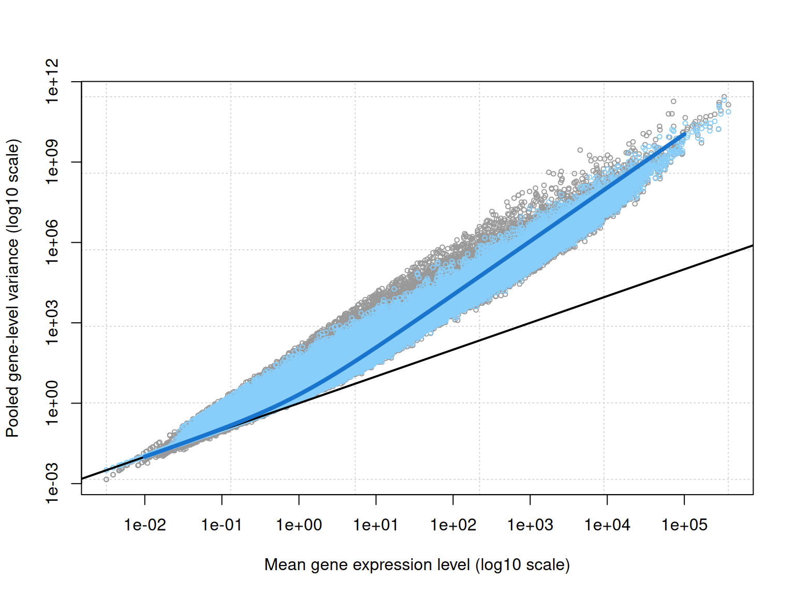
Each dot represents a gene. The x-axis shows the average expression level (mean), and the y-axis shows the variance. Both axes are on a log scale.
The black line represents the linear mean–variance relationship expected under a Poisson distribution, while the blue line represents the mean–variance trend under the negative binomial distribution. As gene expression increases, the variance also increases. Most points lie above the black line, indicating that the data are more variable than expected under a Poisson model. The blue line follows the cloud of points much more closely, suggesting that the negative binomial model provides a better fit.
The grey points represent the observed (raw) variances, while the dispersion estimates gene by gene are represented by the light blue dots.
Identification of differentially expressed genes
The glmFit() function estimates the parameters of a generalized linear model (GLM). After normalization, the counts are effectively adjusted through scaling factors. To account for these normalized library sizes, an offset is included in the GLM: \(log(E[Y|X]) = X\beta + O\), where \(log(E[Y|X])\) is the link function for negative binomial distribution and \(X\beta\) represents the linear predictor, and \(O\) is the offset that incorporates the effective library sizes.
fit <- glmFit(dge, design)
fit$offset[,1:20] [,1] [,2] [,3] [,4] [,5] [,6] [,7] [,8]
[1,] 17.88867 17.85052 16.76021 17.58436 17.46216 17.76843 18.07505 17.29918
[,9] [,10] [,11] [,12] [,13] [,14] [,15] [,16]
[1,] 17.00183 17.49189 17.96796 16.91372 18.1748 18.17354 17.62889 17.67992
[,17] [,18] [,19] [,20]
[1,] 18.04253 17.46894 18.15865 18.24915
attr(,"class")
[1] "CompressedMatrix"
attr(,"Dims")
[1] 52215 20
attr(,"repeat.row")
[1] TRUE
attr(,"repeat.col")
[1] FALSEOnce the model parameters have been estimated, we can perform the differential expression test for each gene, using the glmLRT() function. By specifying coef = 2 (prox.-proliferative vs prox.-inflammatory), the null hypothesis is \(H0:\beta_2=0\), which tests whether the effect of this condition is significantly different from zero. Let’s see the first ten differentially expressed genes sorted by log fold-change (logFC), using the topTags() function:
res <- glmLRT(fit, coef=2)
topTags(res, sort.by="logFC")Coefficient: paper_expression_subtypeprox.-prolif.
logFC logCPM LR PValue FDR
ENSG00000134193 10.740183 6.67987275 176.25455 3.186028e-40 4.158961e-36
ENSG00000200156 -10.630198 2.57989097 34.91011 3.452825e-09 1.064281e-07
ENSG00000222477 -9.640331 0.56954365 18.59699 1.614752e-05 1.458977e-04
ENSG00000249411 -9.090538 0.36001444 18.10237 2.093406e-05 1.813926e-04
ENSG00000201098 -9.087485 2.68854403 58.86208 1.691205e-14 2.185798e-12
ENSG00000199568 -9.029580 2.46110045 44.98975 1.980688e-11 1.165971e-09
ENSG00000175121 8.979528 3.52913453 90.18013 2.174352e-21 1.234063e-18
ENSG00000202538 -8.930574 4.99327635 92.82502 5.712847e-22 3.615659e-19
ENSG00000200488 -8.681842 0.06286053 35.44159 2.628154e-09 8.429302e-08
ENSG00000233052 8.667308 -0.25601018 16.09351 6.029043e-05 4.384521e-04For each gene:
- logFC measures how much the gene changes between the two conditions;
- logCPM is the average expression
- LR is the test statistic
- P-value is the p-value
- FDR is adjusted p-value (multiple testing)
Let’s visualize the number of differentially expressed genes using a threshold of \(FDR<0.05\):
tab <- topTags(res, n=Inf)
tab <- tab$table
head(tab) logFC logCPM LR PValue FDR
ENSG00000129437 8.500367 4.997332 224.5107 9.387069e-51 4.901458e-46
ENSG00000132874 6.643113 3.463692 195.8906 1.646776e-44 4.299320e-40
ENSG00000096088 7.423640 10.637672 177.7589 1.495419e-40 2.602776e-36
ENSG00000134193 10.740183 6.679873 176.2546 3.186028e-40 4.158961e-36
ENSG00000115758 3.037723 8.882645 165.9550 5.658421e-38 5.909090e-34
ENSG00000122966 2.538198 6.984572 158.9470 1.921886e-36 1.672521e-32de <- tab[tab$FDR <0.05,]
dim(de)[1] 20009 5DEGs exploration
MD plot
First, we visualize the MD plot, comparing the log-fold changes (logFC) with the average log counts per million (logCPM). Black points correspond to non-significant genes, while red and blue points indicate up- and down-regulated genes, respectively.
plotMD(res)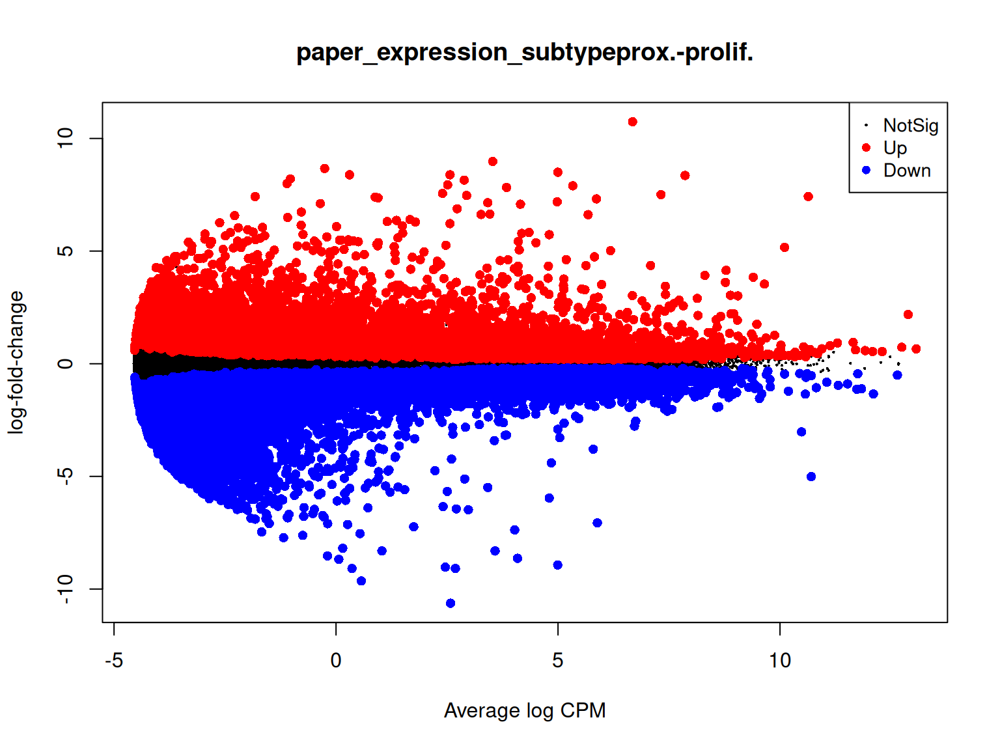
Volcano plot
A volcano plot is a graphical representation of logFC vs -log10(PValue) with the possibility to highlight some genes of interest
names <- row.names(de)
tab$sign <- NA
tab$sign[tab$logFC < 0] <- "Down"
tab$sign[tab$logFC > 0] <- "Up"
tab$sign[tab$FDR >= 0.05] <- "NoSig"
tab$gene <- rownames(tab)
ggplot(tab, aes(x = logFC, y = -log10(PValue), color = sign)) + geom_point() + theme_classic() +
scale_color_manual(values = c("Down" = "blue", "Up" = "red", "NoSig" = "black")) +
geom_text_repel(data = tab[1:20, ], aes(label = gene), size = 2.5, max.overlaps = 20) 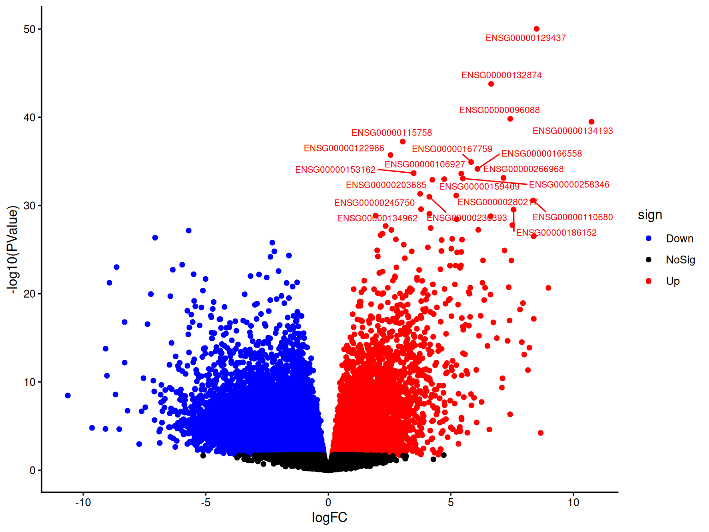
P-value distribution
Last, we check the distribution of the p-values. In an unbiased situation we expect a peak on low values mixed with a uniform distribution.
hist(tab$PValue, main="p-values distribution")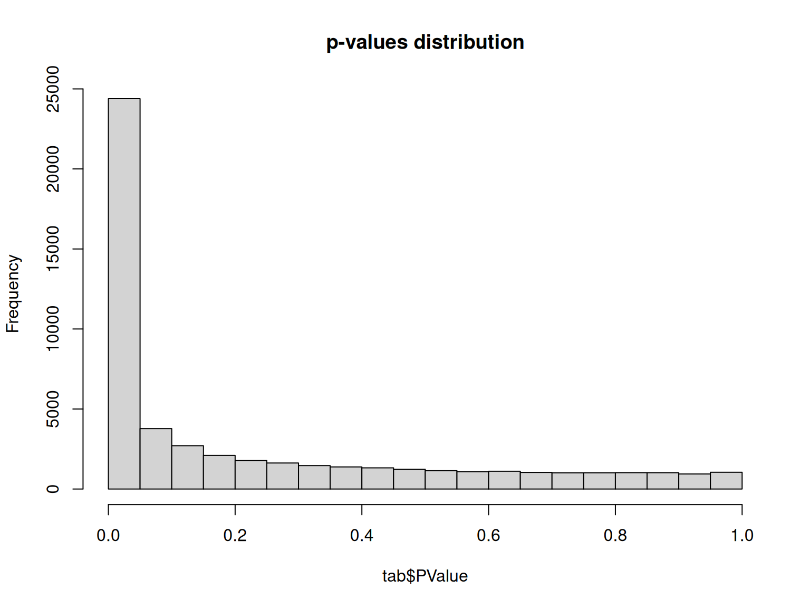
Enrichment
library(knitr)
library(EDASeq)
library(dplyr)
library(plyr)
library(edgeR)
library(DESeq2)
library(limma)
library(clusterProfiler)
library(pathview)
library(AnnotationDbi)
library(org.Hs.eg.db)
library(ReactomePA)
library(enrichplot)
library(ggnewscale)
library(ggupset)
library(ggridges)We will use genes found to be significantly differential expressed between prox.prolif vs prox.inflam the variable paper_expression_subtype to perform gene set enrichment analyses.
Gene Set Analysis with ORA Method
Over-Representation Analysis (ORA) tests whether a gene set is statistically over-represented in your DEG list compared to what you would expect by chance, given the size of the universe.
To check if there are Gene Ontology categories or biological pathways enriched in our DEG list we will use the ClusterProfiler package and the functions enrichKEGG (for KEGG pathways), enrichPathway (for Reactome pathway) and enrichGO (for Gene Ontology categories). All these function implement the Fisher exact test.
First of all we need to create the ID list of i (the differentially expressed genes) and of j, the reference universe (all the quantified genes):
top <- topTags(res, n = Inf)$table
deg <- top[top$FDR <= 0.05,]
dim(deg)[1] 20009 5universo <- row.names(top)
sign <- row.names(deg)
universo.entrez <- mapIds(org.Hs.eg.db, # genome wide annotation for Human that contains Entrez Gene identifiers
keys = universo, #Column containing Ensembl gene ids
column = "ENTREZID",
keytype = "ENSEMBL")
sign.entrez <- mapIds(org.Hs.eg.db,
keys = sign, #Column containing Ensembl gene ids
column = "ENTREZID",
keytype = "ENSEMBL")
universo.entrez <- as.character(universo.entrez)
sign.entrez <- as.character(sign.entrez)
length(sign.entrez)[1] 20009length(universo.entrez)[1] 52215KEGG pathways
With the ID vectors that we have created previously we can estimate the enrichment scores on all the available KEGG pathways:
kk <- enrichKEGG(gene = sign.entrez,
universe = universo.entrez,
organism = 'hsa',
keyType = 'ncbi-geneid',
pvalueCutoff = 0.05,
pAdjustMethod = "BH")
dim(kk)[1] 34 15kk@result[1:10,] category subcategory ID
hsa05332 Human Diseases Immune disease hsa05332
hsa05322 Human Diseases Immune disease hsa05322
hsa05150 Human Diseases Infectious disease: bacterial hsa05150
hsa04940 Human Diseases Endocrine and metabolic disease hsa04940
hsa04640 Organismal Systems Immune system hsa04640
hsa05321 Human Diseases Immune disease hsa05321
hsa05330 Human Diseases Immune disease hsa05330
hsa04380 Organismal Systems Development and regeneration hsa04380
hsa04672 Organismal Systems Immune system hsa04672
hsa04612 Organismal Systems Immune system hsa04612
Description GeneRatio BgRatio
hsa05332 Graft-versus-host disease 35/3601 38/8517
hsa05322 Systemic lupus erythematosus 88/3601 132/8517
hsa05150 Staphylococcus aureus infection 62/3601 86/8517
hsa04940 Type I diabetes mellitus 34/3601 41/8517
hsa04640 Hematopoietic cell lineage 64/3601 95/8517
hsa05321 Inflammatory bowel disease 46/3601 63/8517
hsa05330 Allograft rejection 29/3601 35/8517
hsa04380 Osteoclast differentiation 81/3601 132/8517
hsa04672 Intestinal immune network for IgA production 34/3601 46/8517
hsa04612 Antigen processing and presentation 48/3601 71/8517
RichFactor FoldEnrichment oddsRatio zScore pvalue p.adjust
hsa05332 0.9210526 2.178452 16.073565 6.230957 1.303233e-10 4.600413e-08
hsa05322 0.6666667 1.576784 2.773698 5.715737 1.083911e-08 1.913103e-06
hsa05150 0.7209302 1.705127 3.570971 5.624715 1.802224e-08 2.120617e-06
hsa04940 0.8292683 1.961366 6.684529 5.280907 1.018907e-07 8.991853e-06
hsa04640 0.6736842 1.593382 2.851332 4.977508 6.179304e-07 4.080242e-05
hsa05321 0.7301587 1.726954 3.728866 4.956437 6.935256e-07 4.080242e-05
hsa05330 0.8285714 1.959718 6.643804 4.869134 9.599577e-07 4.840930e-05
hsa04380 0.6136364 1.451358 2.195104 4.472808 6.714454e-06 2.962753e-04
hsa04672 0.7391304 1.748174 3.895337 4.354492 1.299020e-05 4.769944e-04
hsa04612 0.6760563 1.598992 2.874044 4.337589 1.351259e-05 4.769944e-04
qvalue
hsa05332 4.600413e-08
hsa05322 1.913103e-06
hsa05150 2.120617e-06
hsa04940 8.991853e-06
hsa04640 4.080242e-05
hsa05321 4.080242e-05
hsa05330 4.840930e-05
hsa04380 2.962753e-04
hsa04672 4.769944e-04
hsa04612 4.769944e-04
geneID
hsa05332 3107/3569/3115/3122/356/3553/3108/3458/3824/355/3134/3123/3802/3812/115653/940/941/3133/3119/7124/3804/3112/5551/3821/3127/3117/3113/3109/3120/3135/3106/3811/3552/3111/942
hsa05322 8352/720/3115/3122/87/3012/2212/6741/8355/716/727/8969/126961/115482686/8362/8348/958/114483833/3108/8360/3021/8331/3458/2209/8335/8290/440689/8342/6632/653604/8358/732/3123/8367/8363/729/8359/8338/940/55506/8332/8356/8346/941/8970/8345/8339/158983/714/721/3119/8343/7124/6738/3018/8344/8350/3112/2903/717/3127/715/8329/3117/8368/3113/3109/3120/317772/8364/1991/8357/713/2214/8340/712/731/8968/8354/85235/3586/8366/8361/6634/3111/121504/942/3020
hsa05150 1671/8688/720/3115/728/3122/3684/2212/716/727/2359/3860/342574/1669/3108/2209/3880/2213/5648/1672/3123/5340/719/820/3882/2358/3857/714/3689/721/3119/5724/2204/3112/717/3383/54474/3127/715/3117/1828/3113/3109/3120/8687/713/3075/2214/712/125115/4153/390792/3586/6404/2266/25984/1670/3111/2357/192666/3866/3683
hsa04940 3107/3115/3122/356/3553/3108/3458/3382/355/3134/3123/4049/940/1363/941/3133/3593/3119/7124/3112/5551/5799/3127/3117/3113/3109/3120/3135/3329/3106/3552/3111/942/5798
hsa04640 3569/3115/3676/3122/3684/1378/960/3553/3108/2209/3559/1437/914/3678/924/3123/910/3581/952/1440/913/917/3673/925/1604/2057/3574/2815/951/1435/3563/7850/3119/7124/290/3815/929/1436/3112/3566/912/945/911/3127/3690/3117/1441/3113/3109/3120/3575/909/927/3567/3675/915/7066/1438/3552/3111/966/916/920/2993
hsa05321 3569/3115/3122/7099/4772/3553/8809/6774/3108/4790/3458/7043/7042/50615/3123/30009/6097/3460/50943/3593/3119/7124/51561/7040/3112/3566/2625/7097/3459/6772/3594/3127/3117/3113/3109/3120/3725/3567/8807/3586/4094/6775/6095/3552/3111/64127
hsa05330 3107/3115/3122/356/958/3108/3458/355/3134/3123/940/941/3133/3593/3119/7124/3112/5551/3127/3117/3113/3109/3120/3135/3567/3586/3106/3111/942
hsa04380 2885/11006/5530/10288/2212/5293/54/695/5602/4772/3553/3455/5291/55423/4790/3458/2209/7042/1540/7186/10859/3937/3932/2213/353514/6850/488/126014/8061/3716/5290/2534/4688/7048/5295/4286/5599/10990/489/11024/1513/1435/3460/814/7124/5534/7040/3456/1436/11025/9020/4773/8651/3708/7305/3459/6772/3690/5535/3454/140885/1147/5608/9846/2214/79168/2353/8600/3725/4982/6688/653361/3552/10326/4689/54209/3709/11027/10454/23547/6885
hsa04672 3569/3115/3676/3122/3600/8174/7852/2826/958/3108/6387/3601/3123/940/941/10673/3119/7040/57379/3112/9020/3127/29851/3117/3113/3109/3120/10803/3567/3586/56477/3111/942/3695
hsa04612 3107/3320/3115/3122/3108/3458/3809/5641/3824/3310/1520/6891/4261/3134/3123/3802/3812/115653/3309/6890/925/821/3133/2923/3823/972/3119/7124/1508/3804/3112/8302/4801/3821/567/3127/3117/3326/3113/3109/3120/3135/927/3106/3811/3111/920/3822
Count
hsa05332 35
hsa05322 88
hsa05150 62
hsa04940 34
hsa04640 64
hsa05321 46
hsa05330 29
hsa04380 81
hsa04672 34
hsa04612 48barplot(kk) #Quickly rank terms by the number of genes involved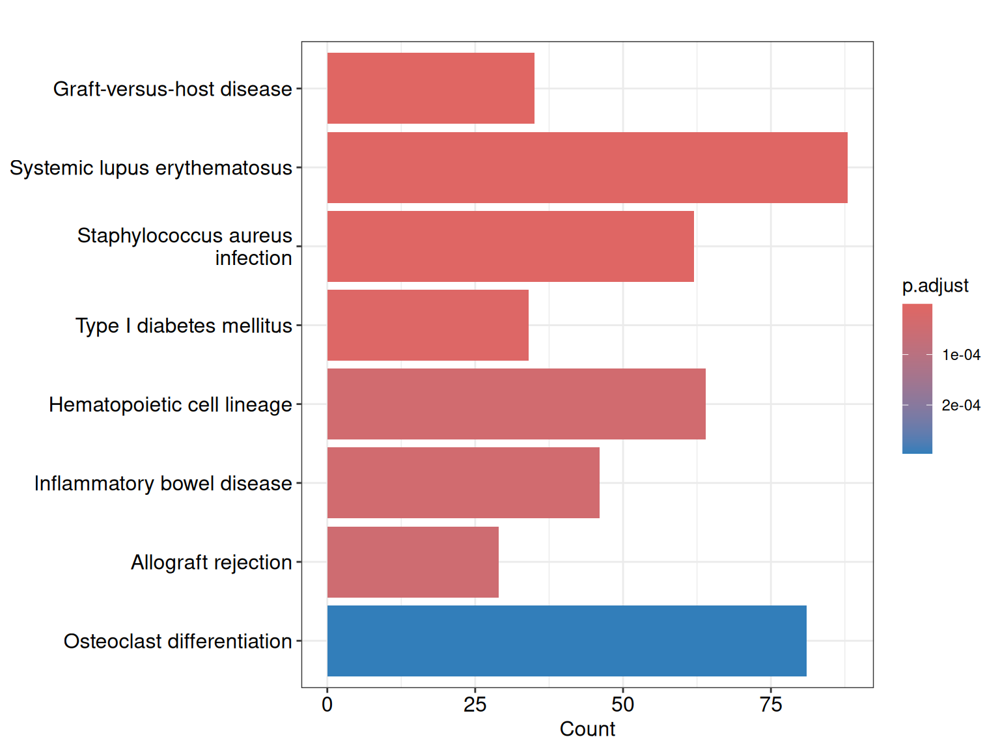
dotplot(kk) #Useful when you want to distinguish between a term that is significant but contains few of your genes vs. one where your DEGs dominate the pathway.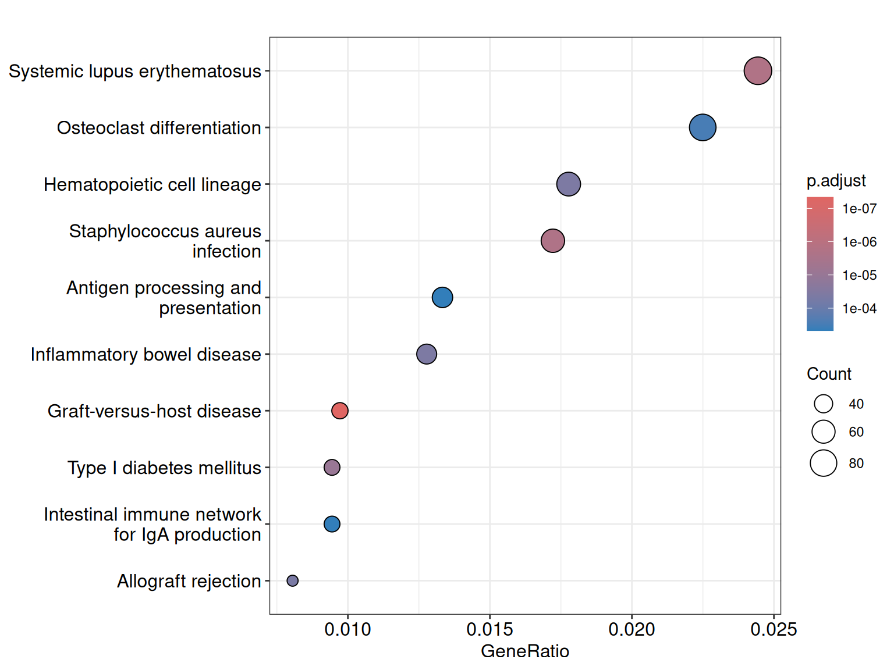
cnetplot(kk) # Useful to see gene overlap between terms and identify multi-pathway genes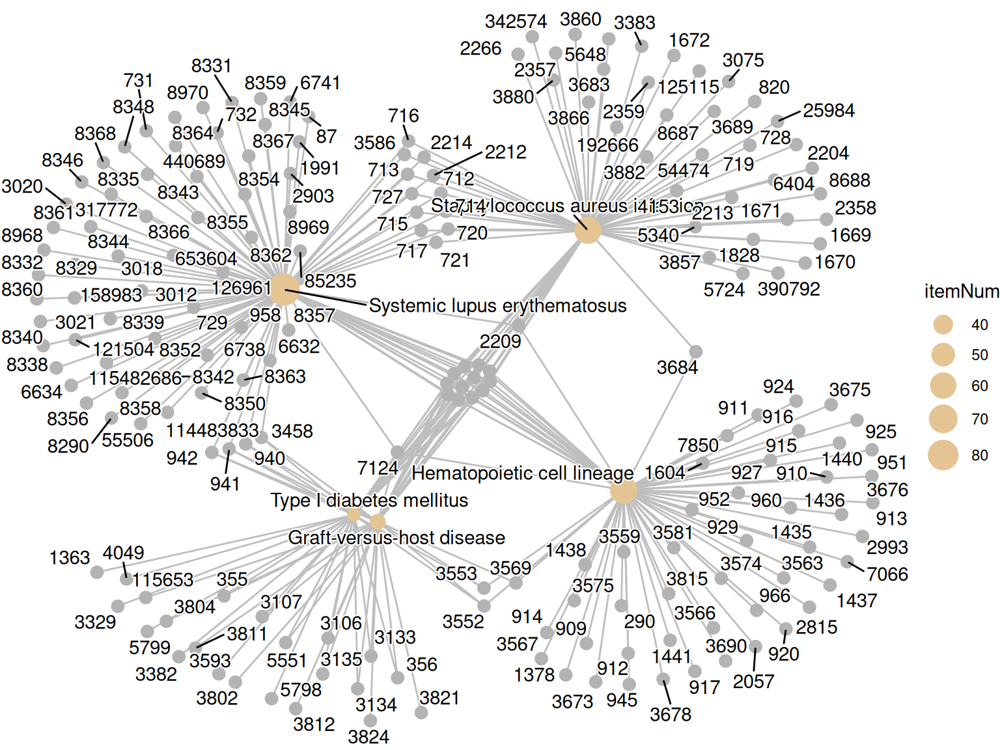
heatplot(kk, showCategory = 10) #Reveals which genes are shared across multiple terms and which are unique to one pathway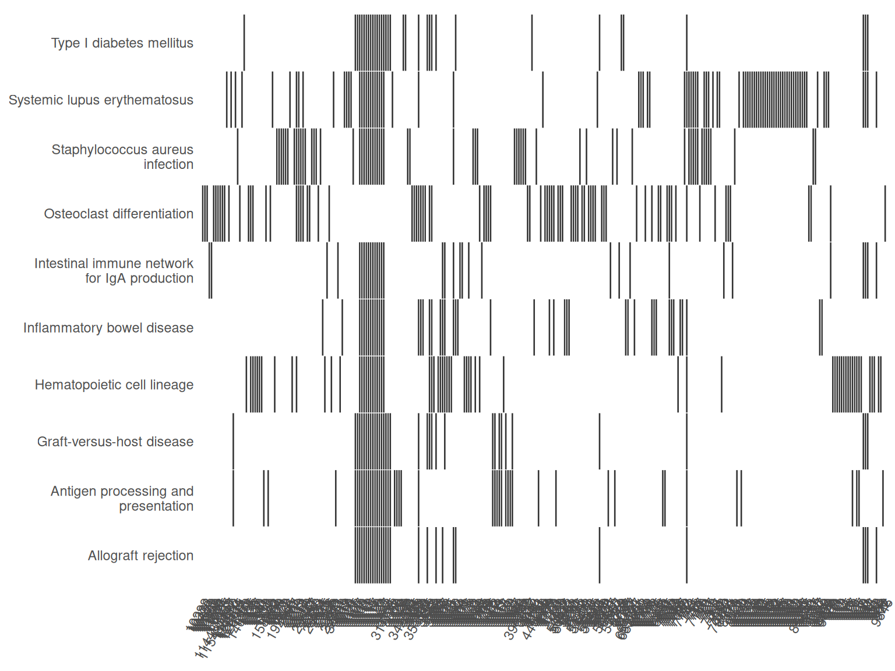
edo <- pairwise_termsim(kk)
emapplot(edo) #Enrichment Map, terms are nodes; edges connect terms that share genes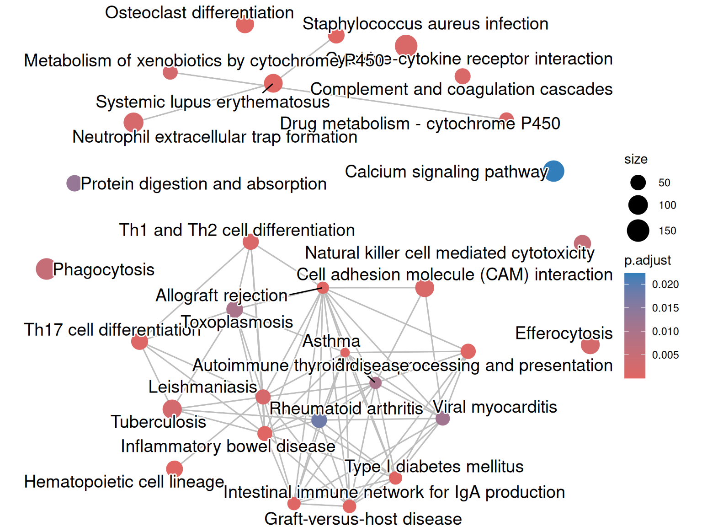
obj <- upsetplot(edo, 8)
obj #Use this to understand the unique vs. shared gene membership across enriched categories.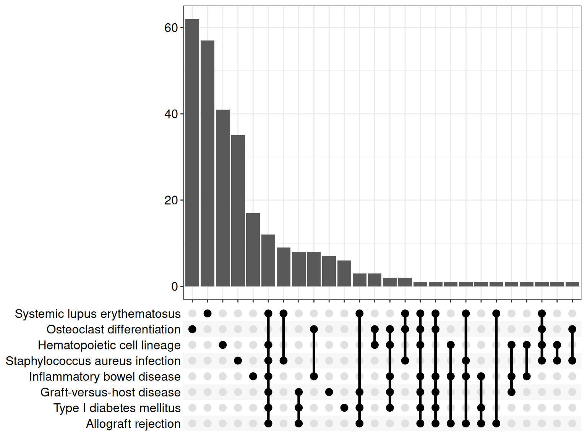
Let’s give a look at the genes that belong to the pathway with ID hsa05321. We will use the pathview function from the pathview package:
pathview(gene.data = sign.entrez, pathway.id = "hsa05321", species = "hsa")
knitr::include_graphics("hsa05321.pathview.png")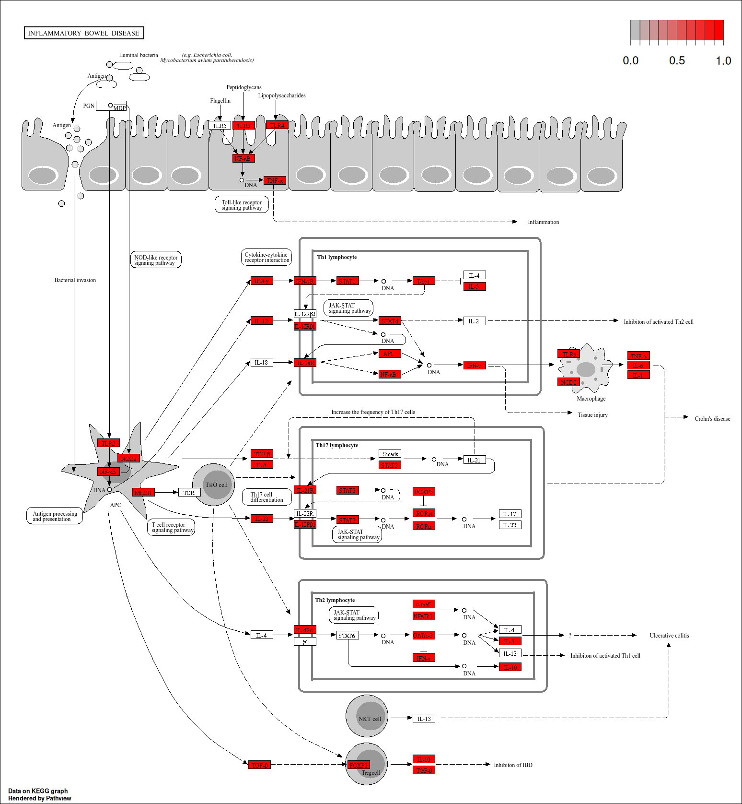
Try to compute the pathway analysis using Reactome database (enrichPathway function) and Gene Ontology (enrichGO function; specify Biological Process (BP) as category).
Reactome database
kk <- enrichPathway(gene = sign.entrez,
universe = universo.entrez,
organism = 'human',
pvalueCutoff = 0.05,
pAdjustMethod = "BH")
kk@result[1:10, 1:6] ID
R-HSA-198933 R-HSA-198933
R-HSA-1474244 R-HSA-1474244
R-HSA-381426 R-HSA-381426
R-HSA-202427 R-HSA-202427
R-HSA-449147 R-HSA-449147
R-HSA-1566948 R-HSA-1566948
R-HSA-202430 R-HSA-202430
R-HSA-8957275 R-HSA-8957275
R-HSA-418594 R-HSA-418594
R-HSA-6783783 R-HSA-6783783
Description
R-HSA-198933 Immunoregulatory interactions between a Lymphoid and a non-Lymphoid cell
R-HSA-1474244 Extracellular matrix organization
R-HSA-381426 Regulation of Insulin-like Growth Factor (IGF) transport and uptake by Insulin-like Growth Factor Binding Proteins (IGFBPs)
R-HSA-202427 Phosphorylation of CD3 and TCR zeta chains
R-HSA-449147 Signaling by Interleukins
R-HSA-1566948 Elastic fibre formation
R-HSA-202430 Translocation of ZAP-70 to Immunological synapse
R-HSA-8957275 Post-translational protein phosphorylation
R-HSA-418594 G alpha (i) signalling events
R-HSA-6783783 Interleukin-10 signaling
GeneRatio BgRatio RichFactor FoldEnrichment
R-HSA-198933 90/4579 124/11027 0.7258065 1.747864
R-HSA-1474244 181/4579 319/11027 0.5673981 1.366390
R-HSA-381426 79/4579 125/11027 0.6320000 1.521962
R-HSA-202427 18/4579 19/11027 0.9473684 2.281422
R-HSA-449147 236/4579 452/11027 0.5221239 1.257362
R-HSA-1566948 33/4579 44/11027 0.7500000 1.806126
R-HSA-202430 15/4579 16/11027 0.9375000 2.257657
R-HSA-8957275 66/4579 108/11027 0.6111111 1.471658
R-HSA-418594 164/4579 311/11027 0.5273312 1.269902
R-HSA-6783783 31/4579 43/11027 0.7209302 1.736121barplot(kk)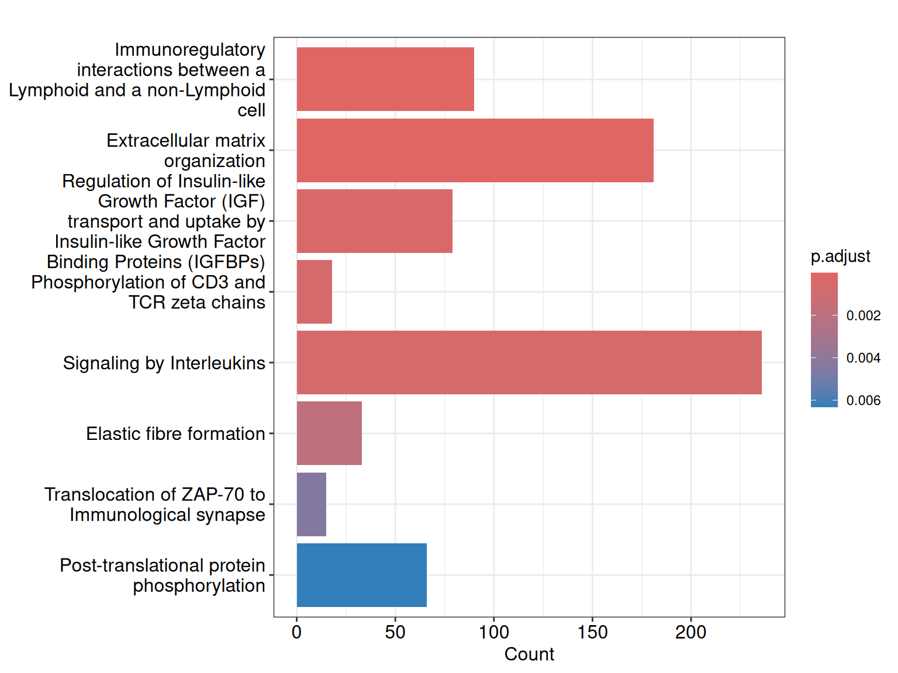
dotplot(kk)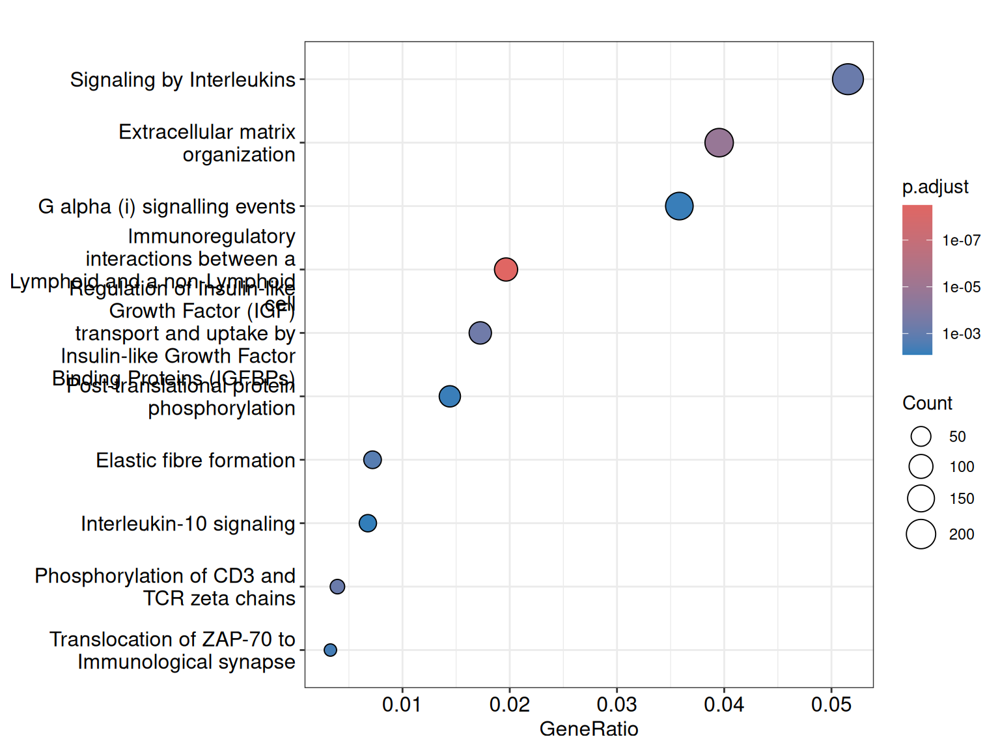
cnetplot(kk)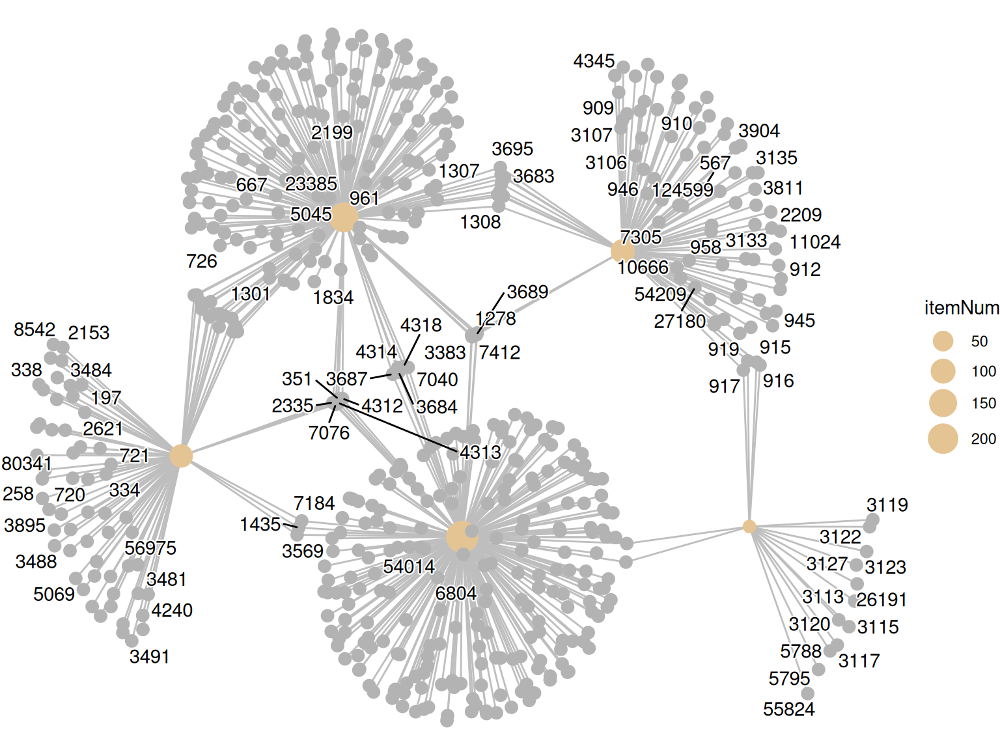
heatplot(kk, showCategory = 10)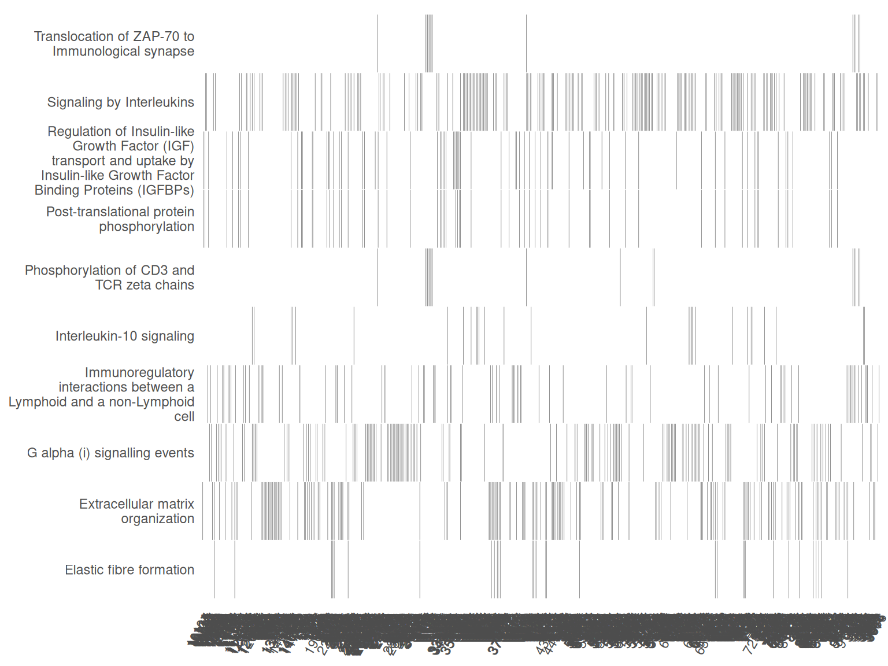
edo <- pairwise_termsim(kk)
emapplot(edo)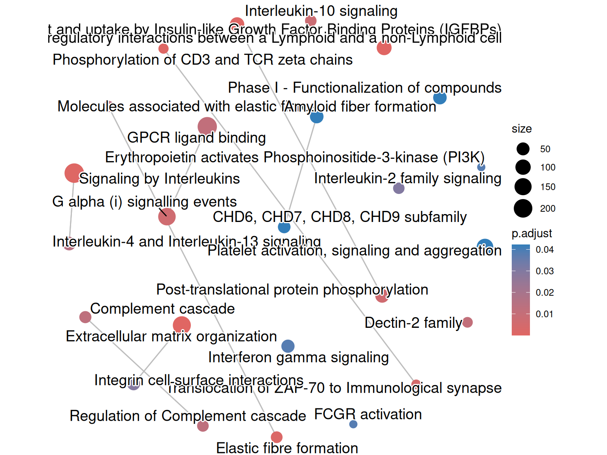
upsetplot(edo, 5)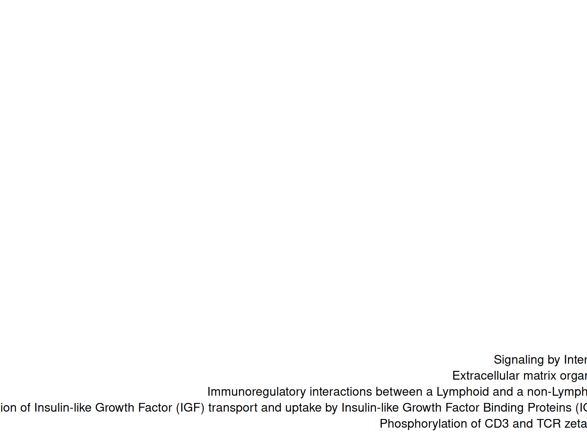
Gene Ontology categories
We run the same analyses using GO terms using the Biological Process (BP) the Molecular function (MF) and the Cellular component (CC) categories:
ego <- enrichGO(gene = sign.entrez,
universe = universo.entrez,
OrgDb = 'org.Hs.eg.db',
keyType = "ENTREZID",
ont = "BP",
pvalueCutoff = 0.05,
pAdjustMethod = "BH",
readable = TRUE)
dim(ego@result[1:10])[1] 5805 10barplot(ego)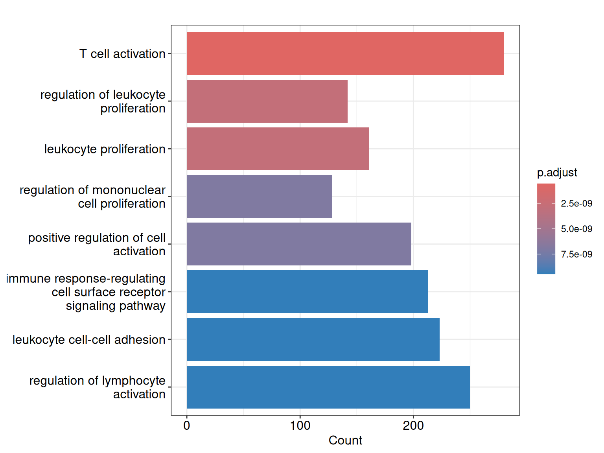
upsetplot(ego, 5)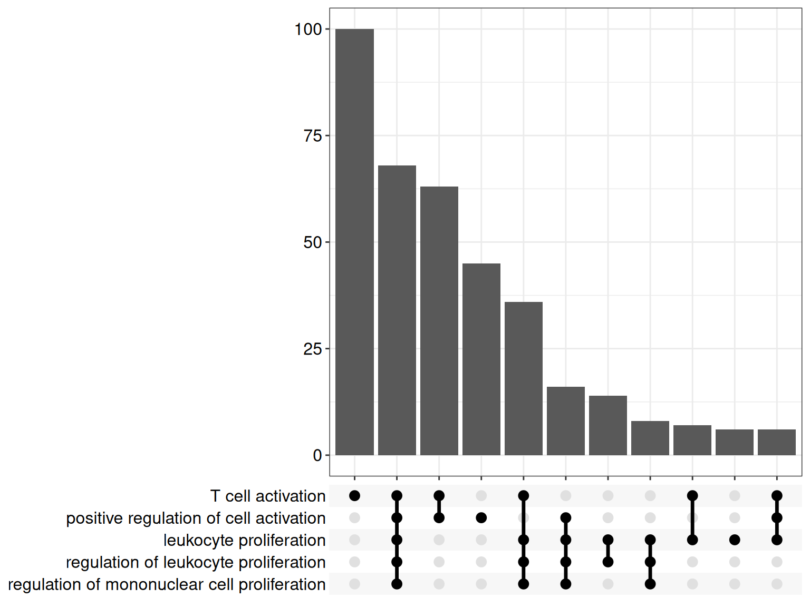
GSEA (Gene Set Enrichment Analysis) method
GSEA (Gene Set Enrichment Analysis) does not require a binary DEG/non-DEG threshold. Instead, it works on the full ranked gene list: all quantified genes are sorted by a continuous statistic (logFC), and the algorithm asks whether the members of a given gene set tend to cluster at the top (up-regulated) or bottom (down-regulated) of this ranking, beyond what is expected by chance. This makes it more sensitive to moderate changes across a pathway.
tt <- top$logFC
names(tt) <- universo.entrez
table(duplicated(names(tt)))
FALSE TRUE
32422 19793 tt <- tt[!duplicated(names(tt))]
table(duplicated(names(tt)))
FALSE
32422 sort_tt <- sort(tt, decreasing = TRUE)Below we will see the results for KEGG and GO only but with gsePathway function we can obtain the results for Reactome pathways.
KEGG pathway
The function to perform the analysis is gseKEGG:
kk2 <- gseKEGG(geneList = sort_tt,
organism = "hsa",
pvalueCutoff = 0.05)
kk2@result[1:10, 1:7] # The key output is the Normalized Enrichment Score (NES) ID Description setSize
hsa00982 hsa00982 Drug metabolism - cytochrome P450 66
hsa00053 hsa00053 Ascorbate and aldarate metabolism 28
hsa00040 hsa00040 Pentose and glucuronate interconversions 34
hsa00980 hsa00980 Metabolism of xenobiotics by cytochrome P450 72
hsa04975 hsa04975 Fat digestion and absorption 43
hsa04950 hsa04950 Maturity onset diabetes of the young 26
hsa00860 hsa00860 Porphyrin metabolism 43
hsa00340 hsa00340 Histidine metabolism 22
hsa00983 hsa00983 Drug metabolism - other enzymes 77
hsa00330 hsa00330 Arginine and proline metabolism 49
enrichmentScore NES pvalue p.adjust
hsa00982 0.7202440 2.516766 1.000000e-10 8.675000e-09
hsa00053 0.8184001 2.493570 1.736843e-08 6.696495e-07
hsa00040 0.7940977 2.461535 4.061904e-09 1.761851e-07
hsa00980 0.6790471 2.402936 1.649240e-10 1.144572e-08
hsa04975 0.7282462 2.379218 3.376568e-08 1.065154e-06
hsa04950 0.7655439 2.324262 4.117469e-06 4.608909e-05
hsa00860 0.6943046 2.268329 4.158218e-07 7.214508e-06
hsa00340 0.7647783 2.239625 5.733333e-05 4.521515e-04
hsa00983 0.6083788 2.235121 7.565519e-08 2.187696e-06
hsa00330 0.6324454 2.225423 4.404767e-06 4.776419e-05The distribution of the statistics in the various gene sets:
gseaplot(kk2, geneSetID = "hsa03040") #Gene set enriched in down-regulated genes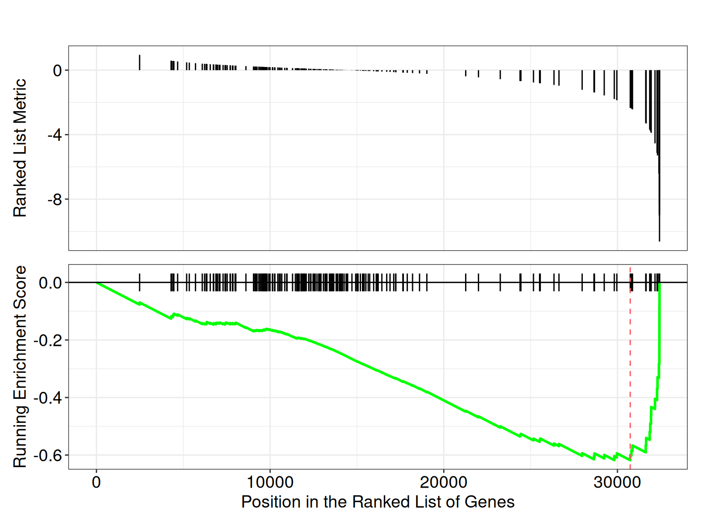
ridgeplot(kk2, label_format = 50, showCategory = 20) #Shows the distribution of the ranking statistic (logFC) for genes belonging to each enriched gene set. Useful for interpreting the direction of enrichment in GSEA results.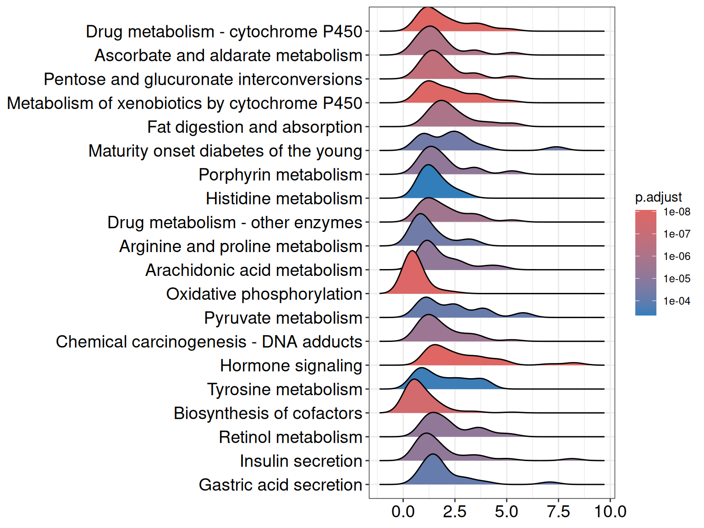
gseaplot(kk2, geneSetID = "hsa00053") #Gene set enriched in top-regulated genes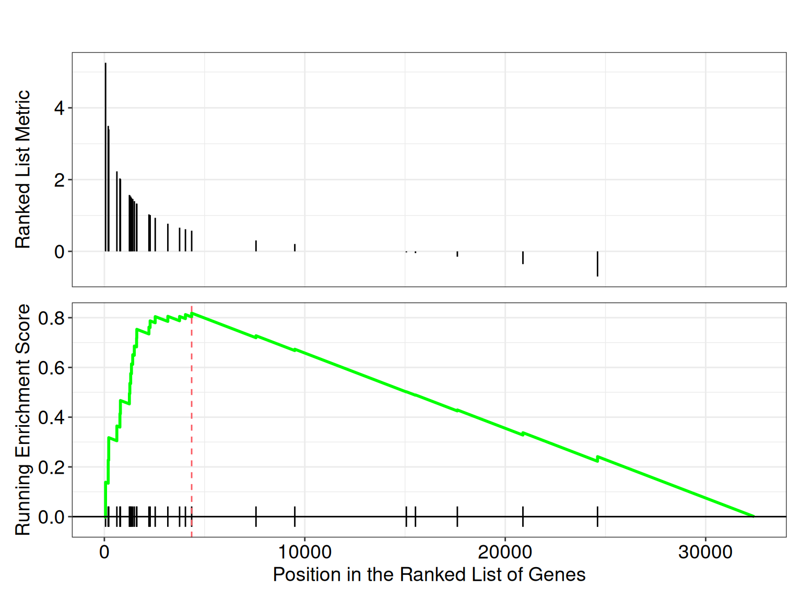
The same analyzes can be performed on the Gene Ontology, here we will use only BP (biological processes) but you can perform the analyses using all the categories (MF and CC)
GO categories
kkGO <- gseGO(geneList = sort_tt,
ont = "BP",
OrgDb='org.Hs.eg.db',
keyType = "ENTREZID",
pAdjustMethod = "BH")
kkGO@result[1:10, 1:6] ID Description setSize
GO:0007586 GO:0007586 digestion 120
GO:0090277 GO:0090277 positive regulation of peptide hormone secretion 105
GO:0046887 GO:0046887 positive regulation of hormone secretion 137
GO:0022600 GO:0022600 digestive system process 90
GO:0022900 GO:0022900 electron transport chain 120
GO:0030073 GO:0030073 insulin secretion 169
GO:0002793 GO:0002793 positive regulation of peptide secretion 106
GO:0010669 GO:0010669 epithelial structure maintenance 37
GO:0090276 GO:0090276 regulation of peptide hormone secretion 181
GO:0002790 GO:0002790 peptide secretion 212
enrichmentScore NES pvalue
GO:0007586 0.6378296 2.549499 1.000000e-10
GO:0090277 0.6066107 2.374059 1.909780e-10
GO:0046887 0.5924269 2.366469 1.000000e-10
GO:0022600 0.6233988 2.347065 1.153336e-09
GO:0022900 0.5786191 2.312826 1.000000e-10
GO:0030073 0.5695748 2.298587 1.000000e-10
GO:0002793 0.5952844 2.286645 2.456799e-09
GO:0010669 0.7106542 2.282334 1.708907e-06
GO:0090276 0.5451999 2.279928 1.000000e-10
GO:0002790 0.5418583 2.274556 1.000000e-10Let’s see the distribution of the statistics in the various gene sets:
gseaplot(kkGO, geneSetID = "GO:0006334")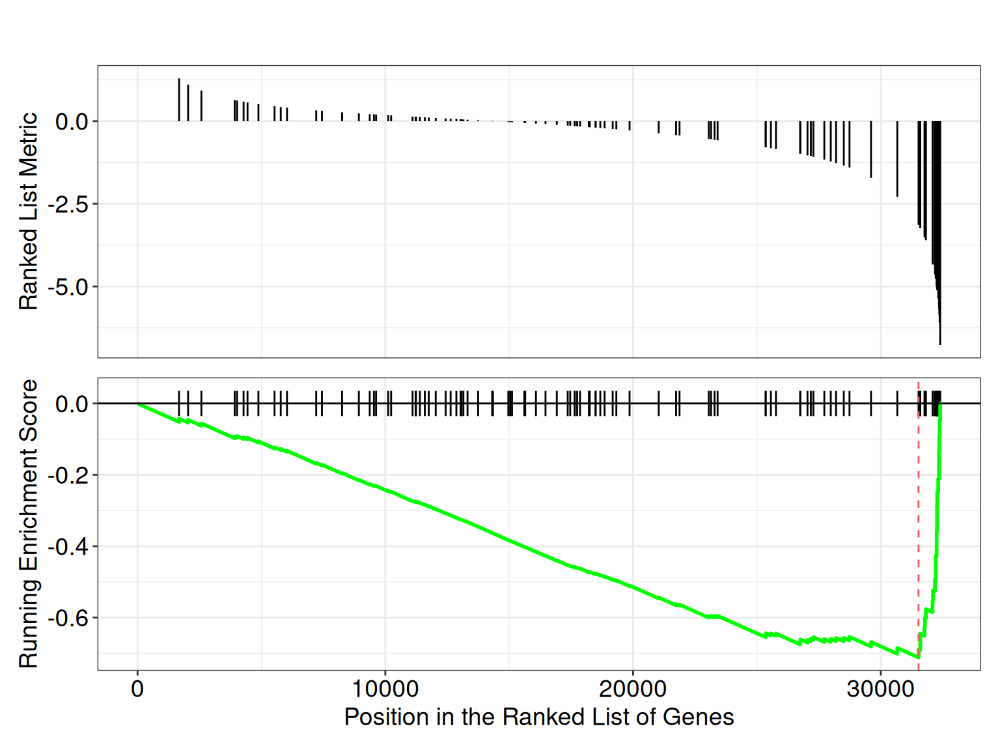
ridgeplot(kkGO, label_format = 50, showCategory = 20) # all shown gene sets are significant well beyond the resolution of the test --> To rank and interpret results look at the NES instead of the p.adjust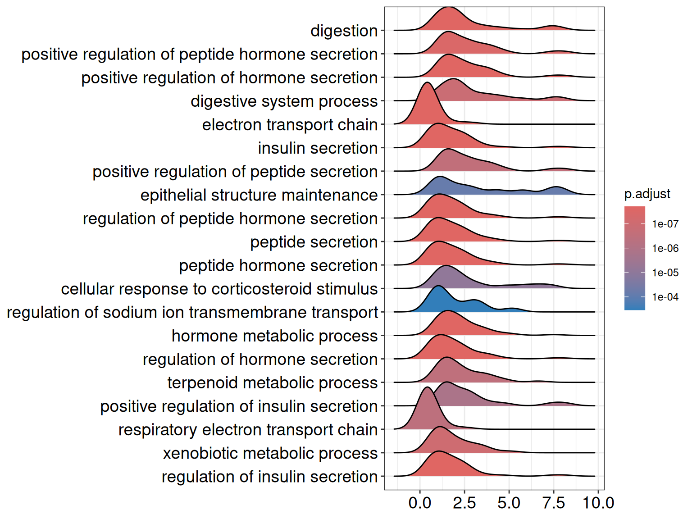
dotplot(kkGO)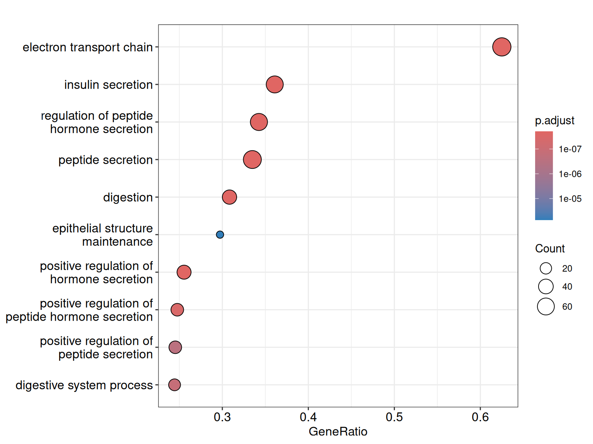
save("deg_enrichment.RData")Exercises
1. Check the help of the pathview function and try to change some options, such as for example kegg.native or node.sum.
2. Redo the analyses using the variable transversion high vs low